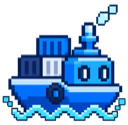
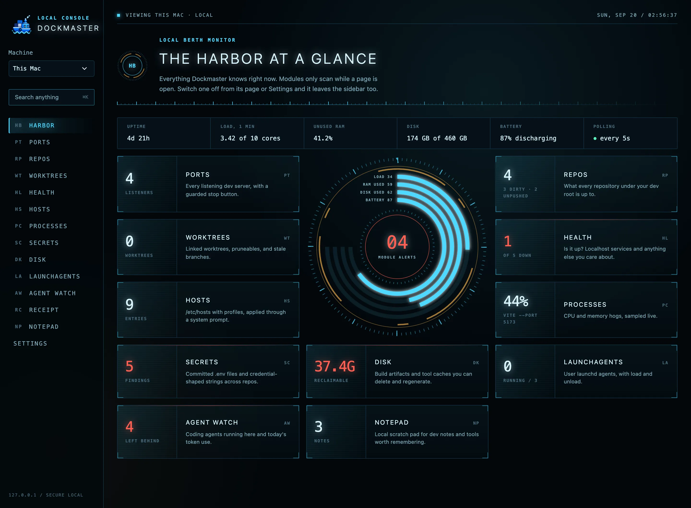
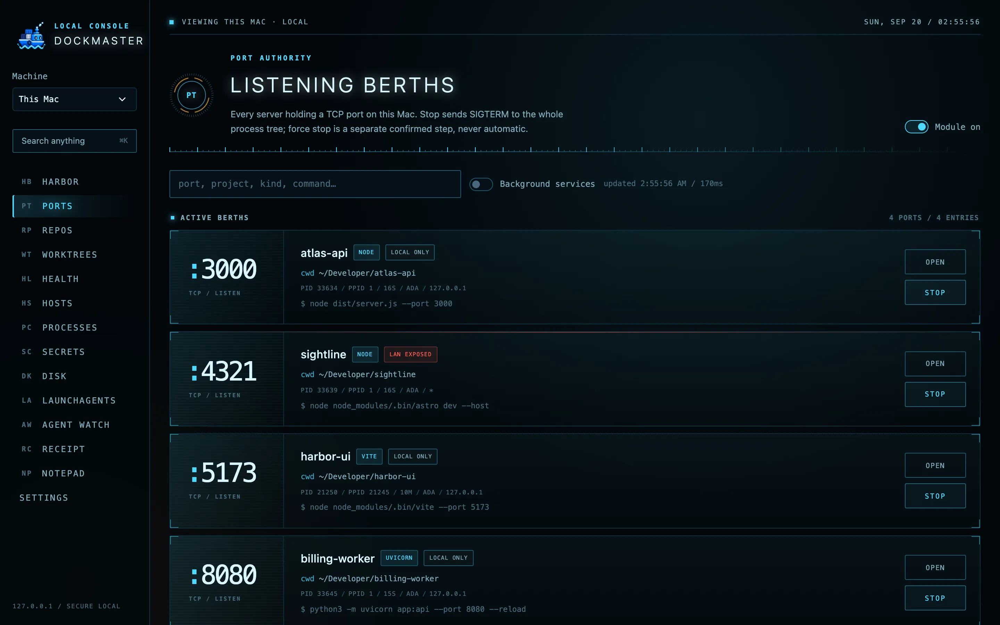
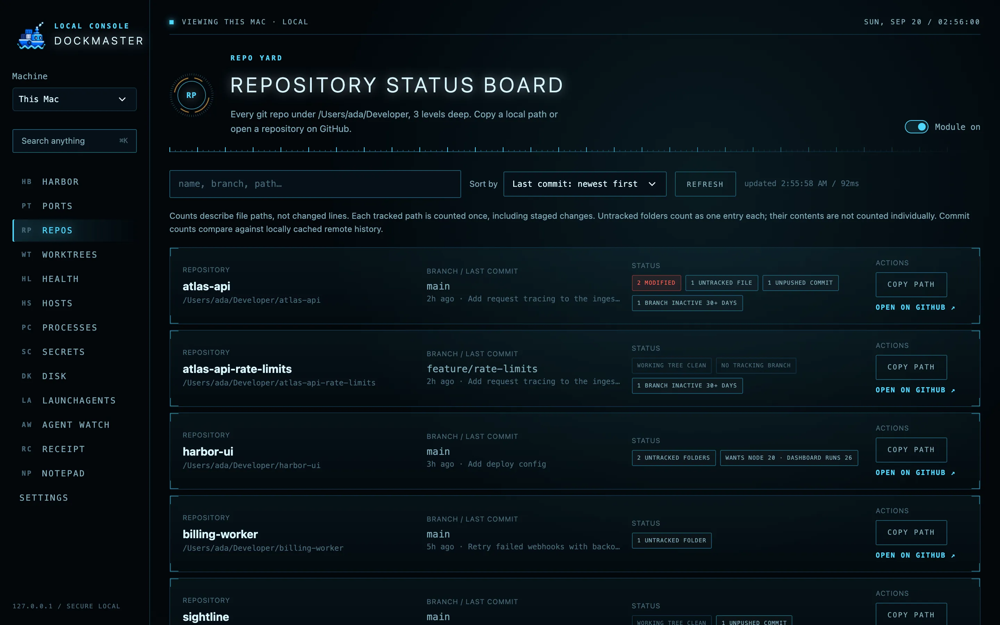
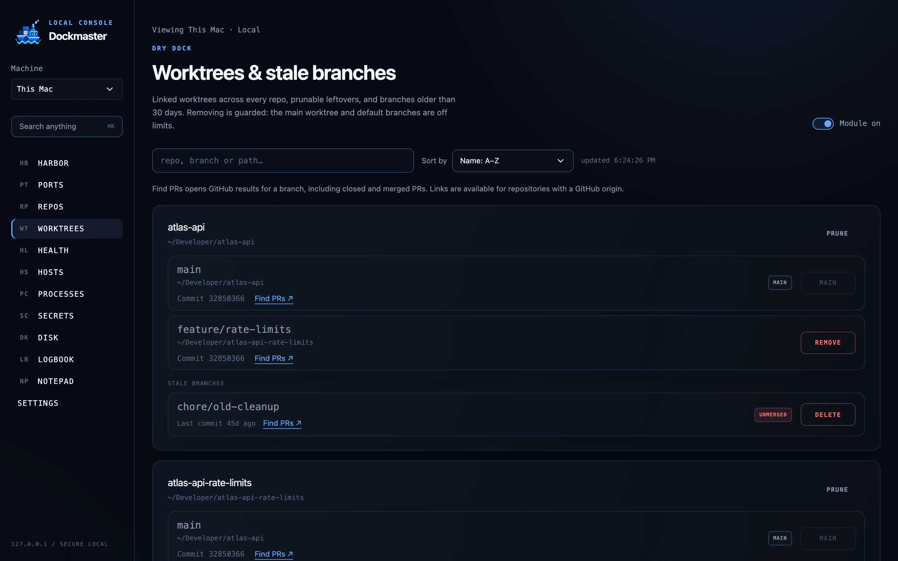
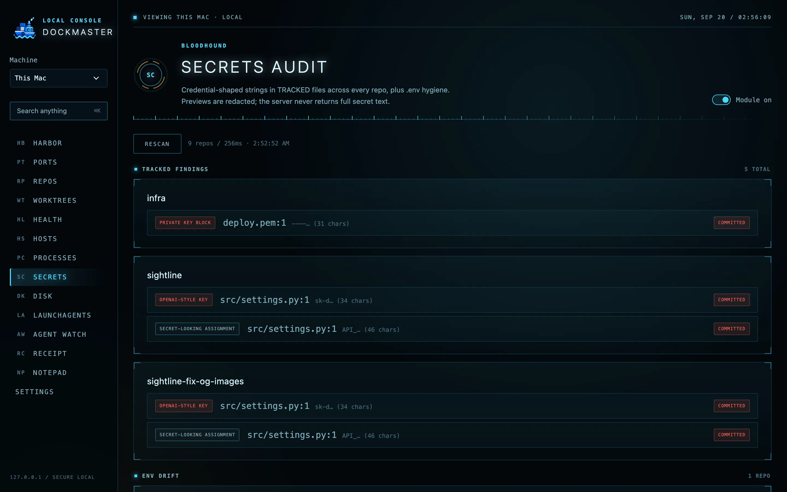
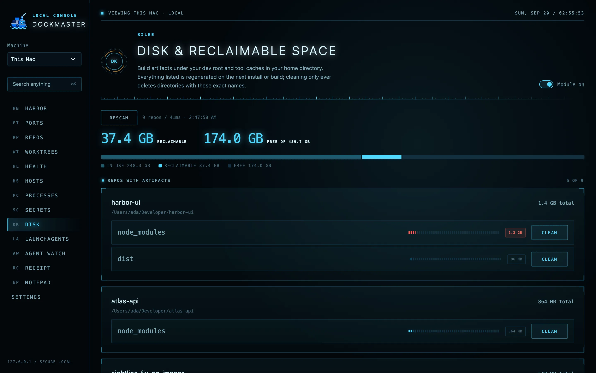
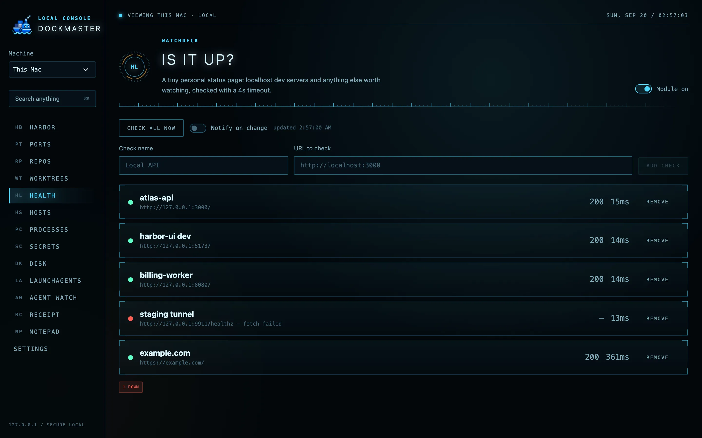

01 / PORTS
Find the server you forgot about.
Every listening TCP port with its project, process tree, and whether it is exposed to the LAN. Stop sends SIGTERM to the whole tree. Force kill is a separate, confirmed step.

Stray dev servers, dirty repos, committed secrets, and forty gigs of node_modules. One dashboard on your loopback, for this Mac and any other Mac over SSH.
Paste the prompt into your coding agent, or git clone and npm start. MIT licensed.

Each module scans only while its page is open, and each one can be switched off. Destructive buttons are guarded and re-verified before they act.
Every listening TCP port with its project, process tree, and whether it is exposed to the LAN. Stop sends SIGTERM to the whole tree. Force kill is a separate, confirmed step.


Dirty files, ahead and behind counts, stale branches, and the last commit for everything under your dev root. Copy a path or jump to GitHub from the row.
Linked worktrees, prunable leftovers, and branches untouched for 30 days. Remove and delete are one click, but the main worktree and default branches are off limits.


Credential-shaped strings in tracked files across every repo: cloud keys, tokens, private key blocks. Previews are redacted on the server. The full string never leaves the process.
node_modules, build output, virtualenvs, and tool caches like DerivedData and Homebrew, sized with du. Clean only ever deletes a directory whose exact name is on the list.


A personal status page for localhost services and the external URLs you care about, with status code and latency. Also Hosts profiles, live process load, and a ⌘K palette that searches everything.
Pick another machine in the header and every module runs there: ports with managed SSH forwarding, repo status, disk, health, secrets, all of it. A small companion process starts over your existing SSH session and exits when you leave. No cloud backend, no open port, no reverse tunnel. You only need SSH access between the machines; Tailscale is one way to get it.
Dockmaster started as Port Authority. It keeps the same security model, hardened for a dashboard that runs all day.
Requires macOS and Node 20.12 or newer. The production build idles at 150 to 200 MB and no CPU.
Set up Dockmaster on this Mac: https://github.com/naman0r/dockmaster Clone the repo or use an existing checkout, read the README, and check the requirements. Install dependencies, configure my development root, build and start the production app on loopback, and verify it works. Give me the URL and explain how to start and stop it. If I want to connect a homelab, follow docs/remote-machines.md using my existing SSH access.
By hand: git clone https://github.com/naman0r/dockmaster && cd dockmaster && npm install && npm run build && npm start
MIT licensed, plain TypeScript, one process. If Dockmaster has stopped a stray server or freed a gig of cache for you, a star helps, and a PR or issue gets a real reply.